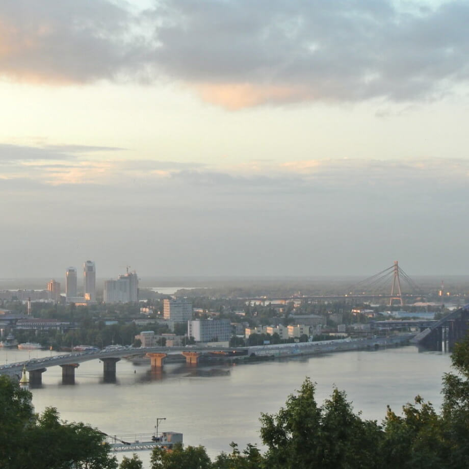
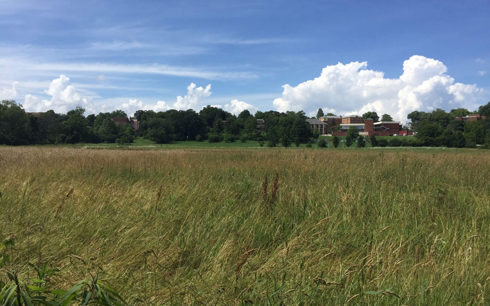

Un viaje épico de Kentucky a
Burundi pasando por Gales y Ucrania
Conoce un poco mejor los lugares de los
que proceden tus colegas en línea
Todo ser humano es un artista,
un ser de la libertad, llamado a participar en la transformación y
reforma de las condiciones, el pensamiento y las estructuras que conforman
e influyen en nuestras vidas.
— Joseph Beuys
La ciudad de Practicum ha reunido
a profesionales de diferentes rincones del mundo. Hoy,
la Galería de Arte Practicum se enorgullece de presentar
historias y fotografías de algunas de las personas que
dedican su tiempo y esfuerzo a hacer que los futuros profesionales
de la tecnología de esta ciudad se sientan como en casa. Cada
uno de nosotros tiene una historia única sobre el lugar del que
procede. No dudes en añadir a nuestra colección tu propia historia
y una obra de arte visual dedicada a tu ciudad natal. No importa de
dónde seas, nos alegra que seas nuestro vecino.
Kiev, Ucrania

ARTISTA
Natalia Dolgushina,
productora de contenidos
Kiev (o Kyiv), la capital de Ucrania,
es una gran ciudad situada a orillas del río Dniéper. Por supuesto,
nadie en su sano juicio se bañaría en el río, a menos que se haya
criado aquí, en cuyo caso probablemente lo haya intentado en algún
momento. Los veranos son calurosos aquí, y los inviernos con fuertes
corrientes de aire, pero el otoño y la primavera son absolutamente increíbles.
La ciudad en sí es una mezcla de arquitectura
prerrevolucionaria, de posguerra y soviética, toda ella salpicada de
balcones modificados. Si te encuentras en la orilla derecha del Dniéper,
el paisaje es difícil de atravesar para las personas en bicicleta y
las que llevan tacones. Sin embargo, la orilla izquierda es considerada
mucho menos interesante y prestigiosa, incluso por la gente que vive en
las afueras de la derecha.

Visítanos
Todo el año Galería de Arte de Practicum 404,
Avenida Tim Berners-Lee.